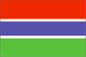

{kind=link}


![[Country map of Gambia, The]](../maps/ga-map.jpg)
| Gambia, The |  |
|
| | |
| Introduction |
Background: The Gambia gained its independence from the UK in 1965; it formed a short-lived federation of Senegambia with Senegal between 1982 and 1989. In 1991 the two nations signed a friendship and cooperation treaty. A military coup in 1994 overthrew the president and banned political activity, but a new 1996 constitution and presidential elections, followed by parliamentary balloting in 1997, have completed a nominal return to civilian rule. The Gambia recently emerged from its isolation to accept a non-permanent seat on the UN Security Council during 1998-99.
| Geography |
Location: Western Africa, bordering the North Atlantic Ocean and Senegal
Geographic coordinates: 13 28 N, 16 34 W
Map references: Africa
Area:
total:
11,300 sq km
land:
10,000 sq km
water:
1,300 sq km
Area - comparative: slightly less than twice the size of Delaware
Land boundaries:
total:
740 km
border countries:
Senegal 740 km
Coastline: 80 km
Maritime claims:
contiguous zone:
18 nm
continental shelf:
not specified
exclusive fishing zone:
200 nm
territorial sea:
12 nm
Climate: tropical; hot, rainy season (June to November); cooler, dry season (November to May)
Terrain: flood plain of the Gambia river flanked by some low hills
Elevation extremes:
lowest point:
Atlantic Ocean 0 m
highest point:
unnamed location 53 m
Natural resources: fish
Land use:
arable land:
18%
permanent crops:
0%
permanent pastures:
9%
forests and woodland:
28%
other:
45% (1993 est.)
Irrigated land: 150 sq km (1993 est.)
Natural hazards: rainfall has dropped by 30% in the last 30 years
Environment - current issues: deforestation; desertification; water-borne diseases prevalent
Environment - international agreements:
party to:
Biodiversity, Climate Change, Desertification, Endangered Species, Hazardous Wastes, Law of the Sea, Nuclear Test Ban, Ozone Layer Protection, Ship Pollution, Wetlands
signed, but not ratified:
none of the selected agreements
Geography - note: almost an enclave of Senegal; smallest country on the continent of Africa
| People |
Population: 1,367,124 (July 2000 est.)
Age structure:
0-14 years:
45% (male 311,293; female 308,570)
15-64 years:
52% (male 352,765; female 358,258)
65 years and over:
3% (male 19,099; female 17,139) (2000 est.)
Population growth rate: 3.2% (2000 est.)
Birth rate: 42.28 births/1,000 population (2000 est.)
Death rate: 13.21 deaths/1,000 population (2000 est.)
Net migration rate: 2.97 migrant(s)/1,000 population (2000 est.)
Sex ratio:
at birth:
1.03 male(s)/female
under 15 years:
1.01 male(s)/female
15-64 years:
0.98 male(s)/female
65 years and over:
1.11 male(s)/female
total population:
1 male(s)/female (2000 est.)
Infant mortality rate: 79.29 deaths/1,000 live births (2000 est.)
Life expectancy at birth:
total population:
53.2 years
male:
51.29 years
female:
55.16 years (2000 est.)
Total fertility rate: 5.76 children born/woman (2000 est.)
Nationality:
noun:
Gambian(s)
adjective:
Gambian
Ethnic groups: African 99% (Mandinka 42%, Fula 18%, Wolof 16%, Jola 10%, Serahuli 9%, other 4%), non-African 1%
Religions: Muslim 90%, Christian 9%, indigenous beliefs 1%
Languages: English (official), Mandinka, Wolof, Fula, other indigenous vernaculars
Literacy:
definition:
age 15 and over can read and write
total population:
38.6%
male:
52.8%
female:
24.9% (1995 est.)
| Government |
Country name:
conventional long form:
Republic of The Gambia
conventional short form:
The Gambia
Data code: GA
Government type: republic under multiparty democratic rule
Capital: Banjul
Administrative divisions: 5 divisions and 1 city*; Banjul*, Lower River, Central River, North Bank, Upper River, Western
Independence: 18 February 1965 (from UK); note - The Gambia and Senegal signed an agreement on 12 December 1981 that called for the creation of a loose confederation to be known as Senegambia, but the agreement was dissolved on 30 September 1989
National holiday: Independence Day, 18 February (1965)
Constitution: 24 April 1970; suspended July 1994; rewritten and approved by national referendum 8 August 1996; reestablished in January 1997
Legal system: based on a composite of English common law, Koranic law, and customary law; accepts compulsory ICJ jurisdiction, with reservations
Suffrage: 18 years of age; universal
Executive branch:
chief of state:
President Yahya A. J. J. JAMMEH (since 12 October 1996); Vice President Isatou Njie SAIDY (since 20 March 1997); note - the president is both the chief of state and head of government
head of government:
President Yahya A. J. J. JAMMEH (since 18 October 1996); Vice President Isatou Njie SAIDY (since 20 March 1997); note - the president is both the chief of state and head of government
cabinet:
Cabinet is appointed by the president
elections:
the president is elected by popular vote for a five-year term; the number of terms is not restricted; election last held 26 September 1996 (next to be held NA 2001)
election results:
Yahya A. J. J. JAMMEH elected president; percent of vote - Yahya A. J. J. JAMMEH 55.8%, Ousainou DARBOE 35.8%
Legislative branch:
unicameral National Assembly (49 seats; 45 elected by popular vote, 4 appointed by the president; members serve five-year terms)
elections:
last popular election held 2 January 1997 (next to be held NA 2002)
election results:
percent of vote by party - NA; seats by party - APRC 33, UDP 7, NRP 2, PDOIS 1, independents 2
Judicial branch: Supreme Court
Political parties and leaders:
Alliance for Patriotic Reorientation and Construction or APRC [Yahya A. J. J. JAMMEH]; National Reconciliation Party or NRP [Hamat N. K. BAH]; People's Democratic Organization for Independence and Socialism or PDOIS [Sidia JATTA]; United Democratic Party or UDP [Ousainou DARBOE]
note:
in August 1996 the government banned the following from participation in the elections of 1996: People's Progressive Party or PPP [former President Dawda K. JAWARA (in exile)], and two opposition parties - the National Convention Party or NCP [former Vice President Sheriff DIBBA] and the Gambian People's Party or GPP [Hassan Musa CAMARA]
International organization participation: ACP, AfDB, C, CCC, ECA, ECOWAS, FAO, G-77, IBRD, ICAO, ICFTU, ICRM, IDA, IDB, IFAD, IFC, IFRCS, ILO, IMF, IMO, Intelsat (nonsignatory user), Interpol, IOC, ITU, NAM, OAU, OIC, OPCW, UN, UNCTAD, UNESCO, UNIDO, UPU, WCL, WFTU, WHO, WIPO, WMO, WToO, WTrO
Diplomatic representation in the US:
chief of mission:
Ambassador John P. BOJANG
chancery:
Suite 1000, 1155 15th Street NW, Washington, DC 20005
telephone:
[1] (202) 785-1399
FAX:
[1] (202) 785-1430
Diplomatic representation from the US:
chief of mission:
Ambassador George W. HALEY
embassy:
Fajara, Kairaba Avenue, Banjul
mailing address:
P. M. B. No. 19, Banjul
telephone:
[220] 392856, 392858, 391970, 391971
FAX:
[220] 392475
Flag description: three equal horizontal bands of red (top), blue with white edges, and green
| Economy |
Economy - overview: The Gambia has no important mineral or other natural resources and has a limited agricultural base. About 75% of the population depends on crops and livestock for its livelihood. Small-scale manufacturing activity features the processing of peanuts, fish, and hides. Reexport trade normally constitutes a major segment of economic activity, but the 50% devaluation of the CFA franc in January 1994 made Senegalese goods more competitive and hurt the reexport trade. The Gambia has benefited from a rebound in tourism after its decline in response to the military's takeover in July 1994. Short-run economic progress remains highly dependent on sustained bilateral and multilateral aid and on responsible government economic management as forwarded by IMF technical help and advice. Annual GDP growth is expected to fall to less than 4% over 2000-01.
GDP: purchasing power parity - $1.4 billion (1999 est.)
GDP - real growth rate: 4.2% (1999 est.)
GDP - per capita: purchasing power parity - $1,030 (1999 est.)
GDP - composition by sector:
agriculture:
23%
industry:
13%
services:
64% (1997 est.)
Population below poverty line: NA%
Household income or consumption by percentage share:
lowest 10%:
NA%
highest 10%:
NA%
Inflation rate (consumer prices): 2.5% (1999 est.)
Labor force: 400,000
Labor force - by occupation: agriculture 75%, industry, commerce, and services 19%, government 6%
Unemployment rate: NA%
Budget:
revenues:
$88.6 million
expenditures:
$98.2 million, including capital expenditures of $NA (FY96/97 est.)
Industries: processing peanuts, fish, and hides; tourism; beverages; agricultural machinery assembly, woodworking, metalworking; clothing
Industrial production growth rate: NA%
Electricity - production: 75 million kWh (1998)
Electricity - production by source:
fossil fuel:
100%
hydro:
0%
nuclear:
0%
other:
0% (1998)
Electricity - consumption: 70 million kWh (1998)
Electricity - exports: 0 kWh (1998)
Electricity - imports: 0 kWh (1998)
Agriculture - products: peanuts, millet, sorghum, rice, corn, cassava (tapioca), palm kernels; cattle, sheep, goats; forest and fishery resources not fully exploited
Exports: $132 million (f.o.b., 1998)
Exports - commodities: peanuts and peanut products, fish, cotton lint, palm kernels
Exports - partners: Benelux 78%, Japan, UK, Hong Kong, France, Spain (1997)
Imports: $201 million (f.o.b., 1998)
Imports - commodities: foodstuffs, manufactures, fuel, machinery and transport equipment
Imports - partners: Hong Kong, UK, Netherlands, Cote d'Ivoire, France, Senegal, Belgium (1997)
Debt - external: $430 million (1997 est.)
Economic aid - recipient: $45.4 million (1995)
Currency: 1 dalasi (D) = 100 butut
Exchange rates: dalasi (D) per US$1 - 11.626 (November 1999), 10.643 (1998), 10.200 (1997), 9.789 (1996), 9.546 (1995)
Fiscal year: 1 July - 30 June
| Communications |
Telephones - main lines in use: 22,000 (1998)
Telephones - mobile cellular: 4,485 (1998)
Telephone system:
domestic:
adequate network of microwave radio relay and open wire
international:
microwave radio relay links to Senegal and Guinea-Bissau; satellite earth station - 1 Intelsat (Atlantic Ocean)
Radio broadcast stations: AM 3, FM 2, shortwave 0 (1998)
Radios: 196,000 (1997)
Television broadcast stations: 1 (government-owned) (1997)
Televisions: 4,000 (1997)
Internet Service Providers (ISPs): 2 (1999)
| Transportation |
Railways: 0 km
Highways:
total:
2,700 km
paved:
956 km
unpaved:
1,744 km (1996 est.)
Waterways: 400 km
Ports and harbors: Banjul
Merchant marine: none (1999 est.)
Airports: 1 (1999 est.)
Airports - with paved runways:
total:
1
over 3,047 m:
1 (1999 est.)
| Military |
Military branches: Army (includes marine unit), National Police, National Guard
Military manpower - availability:
males age 15-49:
306,359 (2000 est.)
Military manpower - fit for military service:
males age 15-49:
154,432 (2000 est.)
Military expenditures - dollar figure: $1 million (FY96/97)
Military expenditures - percent of GDP: 2% (FY96/97)
| Transnational Issues |
Disputes - international: short section of boundary with Senegal is indefinite